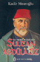

- jquery örnekleri. Link
- Asp.net ile kendimize özel doğrulama popup'ı oluşturmak. Link
- 10 adet Asp.net ipucu. Link
- Asp.net ve php ile programlama ile ekran görüntüsü almak. Link
- PNG-8 ve PNG-24 formatlarını inceleyen güzel bir makale. Link
- Ajax ile yapılmış sayfalama betiği. Link
- Php ile zamana göre farklı ...
16 Eylül 2007 Web'den Seçme Haberler
- Javascript'ten asp.net ve asp.net'den javascript'e veri göndermeyi anlatan güzel makale. Link
- Arama motorlarının anlaya bileceği PDF dosyası oluşturmanın ipuçları. Link
- CSS3 ile birlikte sayfa planlamayı kolaylaştıran araçlar geliyor. Sayfayı ızgara(grid) gibi bölüm planlama işlemini yapabilecekmişiz. Link
- CSS ile Vista görünümlü menü yapmak. Link
- Google ...
Adnan Menderes'in Günlüğü - Taşkın Tuna
devamını oku Kitabı ben ilk önce
Roman olduğunu bilmeden okudum. Şahsen şaşırdım. Çünkü kitabın yazarı
kitabı Adnan Menderes'in ruhunu çağırıp onun ağzından yazmış gibi
anlatıyor. Sonra bu kitabın bu şekilde kurgulanmış belgelerle yazılmış
bir kitap olduğunu öğrenince takdir ettim. Farklı bir yaklaşım
açıkçası. Arka Kapak: Görünüşte herkese açık hayatlar vardır.
Göz ...
Kitabı ben ilk önce
Roman olduğunu bilmeden okudum. Şahsen şaşırdım. Çünkü kitabın yazarı
kitabı Adnan Menderes'in ruhunu çağırıp onun ağzından yazmış gibi
anlatıyor. Sonra bu kitabın bu şekilde kurgulanmış belgelerle yazılmış
bir kitap olduğunu öğrenince takdir ettim. Farklı bir yaklaşım
açıkçası. Arka Kapak: Görünüşte herkese açık hayatlar vardır.
Göz ...CSS ve Tipografi
"Tipografi(Yunancaτύπος (typos)="form" ve γραφία (graphia)="yazmak" sözcüklerinden)yazıyı bir forma sokma sanatı ve tekniğidir. Font (yazı tipi), font büyüklüğü,satır uzunluğu, satır arası boşluk ve benzeri unsurların kombinasyonları ileyapılır. Yayımlanacak yazınsal içeriğin bir forma sokulması veya tasarımı olarakda tanımlanabilir. Türkçe tipografya olarak da çevrilmiştir. TerimTürkçe'yeFransızca'dangeçmiştir ...
devamını oku13 Eylül 2007 Web'den Seçme Haberler
- Google Rader arama ipuçları. Link
- Mailing kodlarken niçin standartlara uymayılız? Link
- Javascript ile yapılmış sağlıklı şifre yazma kontorlü. Link
- Micrsoft Google'u takip etmeye devam ediyor. Windows Live Translator. Türkçe olsa yine iyiydi ama yok. Seneye çıkacakmış Türkçe Link
- CSS ile yapılmış bar grafik örnekleri. Link
- SmashMagazine'den Kullanıcı odaklı ...
Tablo Özellikleri
Daha önce "CSS ile Tabloları şekillendirmek" adlı makalemizde tablo yapılarını gördük ve görünümünü daha güzel nasıl yaparız onun üzerinde durmuştuk. W3C bu durumu göz önünde bulundurarak tablo ve tablo elementlerinin görünümünü düzenlemek için tablo özellikleri ekledi. Tablolar diğer HTML elementlerinden daha farklı kendine has elementlerdir ve farklı özellikleri vardır. Burada ...
devamını okuSultan Abdülaziz / Bir Mazlum Padişah - Kadir Mısıroğlu
Osmanlı'nın yıkılış döneminde başa gelmiş olan padişahlardan Sultan Albdülaziz'in hayatını anlatan bu eserde. Tanzimat ve sonrasına dair bilgiler verilmektedir. Albdülaziz'in muhafakar politiklarının doğru olduğu üzerinden duran kitap benzer anlayıştaki yazarlara göre biraz daha farklı bir görüş belirtmektedir. Albdülaziz'in katl edilmesi hususuna da değinen kitap meselenin bir ...
devamını oku08 Eylül 2007 Web'den Seçme Haberler
- Asp.net'de GridView elementinde açılır menü ile süzme işlemini yapmayı anlatan bir makale. Link
- Javascript ile erişilebilirliği arttırmak. Bu makalede özellik seçiciler ile yaptığımızı javascript ile yapımını gösteriyor. Tabi javascript ile yapınca tüm tarayıcılar destekliyor. Link
- CSS ve png yardımı ile filigran yapmayı anlatan güzel bir makale. Link
- CoScripter ...
Kutu Modeli - Görünüm Efekti Özellikleri
Bu aralar CSS kitabına(e-kitap) ağırlık verdim. Kitaptaki eksik bölümleri tamamlıyorum. İnşallah en yakın zamanda bitecek. Bu konuda onlardan biri.
Kutu elementlerin görünümüne çeşitli etkiler yapan özellikleri göreceğiz bu makalede çoğu CSS2 ile birlikte gelen bu özellikler aşağıda sıralanmıştır.
- overflow - taşma
- clip - kırpma
- visibility - görünürlük
Overflow
Yapısı: overflow: <deger>
devamını oku
Aldığı ...Sql'de Tekrarsız sonuçlar elde etmek - DISTINCT
Bu kodu her defasında kullanmadan önce nasıl kullanıldığını arıyorum. Bu günde aradım ve buraya yazmaya karar verdim. Unutursam burada bulurum diye. Belki sizlerede yarar.
Şimdi kullanıcıların uyelik'lerinin ve resimlerinin olduğu iki tablom var. Bunları bir birine bağlıyorum ve sadece resimleri olanları gösteriyorum. Ancak şöyle bir sorunum oldu. Her resim ...
devamını oku